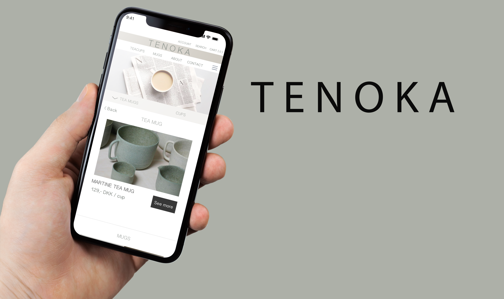
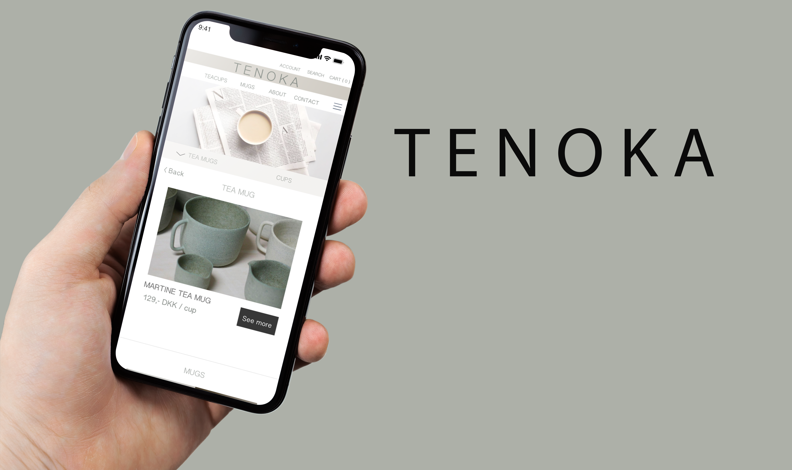

Dette var et 3 ugers langt forløb om grundlæggende UX, hvor vi havde til opgave, at designe og udtænke en content marketing løsning i form af en individuelopgave med henblik på en prototype og en gruppeopgave, hvor vi skulle lave en kea-app. I de følgende uger arbejdede vi meget med design og produktion af digitale indholdsløsninger til en diverse medieplatforme. Vi lærte først hvordan vi hentede data via dataindsamling og microcopy. Her brugte vi både interview og observation, som vi senere brugte til udviklingen af vores prototyper.
’Design sprint’ var en gruppeopgave med henblik på at udvikle en kea-app med pronlemområdet ’Studielivet på KEA’. Vi havde en uge til at udarbejde i form af tværfaglige arbejdsprocesser i design og udviklingen af digitalt indhold med henblik på brugerforståelse. Min gruppe udviklede en skole app der havde til formål at samle alt der har med KEA at gøre i én app.
Lige fra afleveringer, projekter, kalender, skemaer, påmindelser, to-do lister til sociale arrangementer og nyheder om skolen. Målet var at gøre det nemmere for studerende, at få overblik og kommunikere med andre studerende og undervisere. Her arbejdede vi primært i XD, hvor vi udførte vores prototype. Vi brugte metoder som ’The Four-step sketch’, ’lightning demos’, Mapping, samt tests i vores idéprocess.

 

Denne prototype var min første prototype i forløbet om ux. Vi blev stillet en problemformulering og nogle valgmuligheder. Her valgte jeg at tage udgangspunkt i kategorien: kopper, hvor min målgruppe var til det lidt ældre publikum. Jeg fokusede på at finde kvalitets kopper af keramik, hvor både design og kvalitet hang sammen. Jeg forsøgte at lave en app, der var let, overskuelig og designmæssigt hang sammen. Indholdet på hjemmesiden var en del af vores opgave at skrive via dataindsamling og research.
I denne opgave har jeg arbejdet med content på hjemmesider og udført den i XD. I min prototype TENOKA har jeg blandt andet arbejdet meget med tekst, microcopy og billeder. Derudover har jeg brugt UI-kits og componets til at få siden til at se ud, som jeg vil have det og give det design og udtryk, så indholdselemnterne er ens på tværs af siderne.